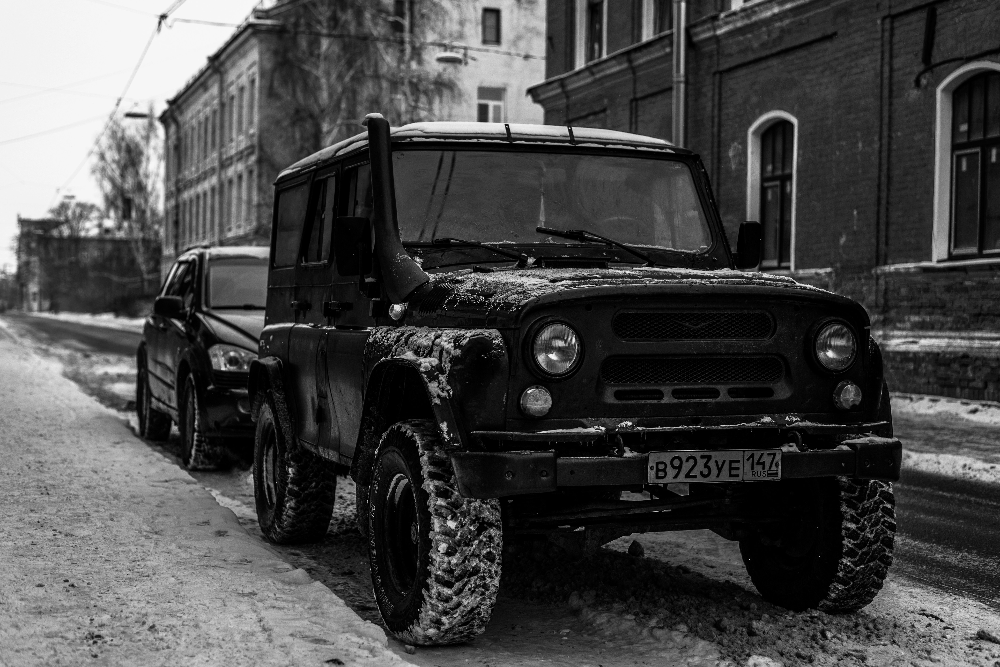
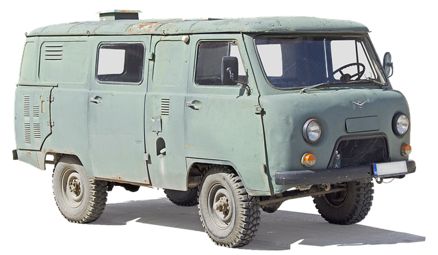

Uaz 469
Az UAZ Hunter, más néven UAZ-469, egy strapabíró terepjáró jármű, amelyet a orosz autógyártó, az UAZ (Ulyanovsky Avtomobilny Zavod) gyárt. Először 1971-ben mutatták be, azóta híres lett strapabíróságáról, egyszerűségéről és képességéről terepen. Az UAZ Huntert különböző katonai, kormányzati és civil szervezetek használták világszerte azért, mert robosztussága és terepjáró képességei miatt.


| Adatok: |
| Márka: |
UAZ |
| Típus: |
469 |
| Motor: |
2.45 (75 LE) |
| Gyártás kezdete: |
1964 |
| Gyártás vége: |
1985 |
Uaz 3909

Az UAZ Buhanka, hivatalos nevén UAZ-452, egy orosz gyártmányú, könnyű terepjáró kisbusz, amelyet az Uljanovszki Autógyár (UAZ) készít. Az 1965 óta gyártott jármű egy ikonikus modell, amelyet leginkább a szovjet hadsereg, valamint különféle polgári és ipari felhasználók körében használnak.
A Buhanka ("kenyérke") nevét az alakja után kapta, mivel a jármű egyszerű, kerekded formája egy kenyércipóra emlékeztet. Az UAZ-452 megbízhatóságáról és masszív felépítéséről híres, különösen nehéz terepviszonyok között. Ez a jármű négykerék-meghajtással rendelkezik, ami rendkívül alkalmassá teszi terepjáró feladatokra, akár hegyvidéki, akár sáros, vagy havas körülmények között.
A Buhanka különféle verziókban érhető el, beleértve a személyszállítót, teherautót és mentőautót is. Ezek a változatok különféle igények kielégítésére szolgálnak, legyen szó katonai, mentési vagy szállítási feladatokról. A jármű egyszerű, de robusztus felépítése és alacsony fenntartási költségei miatt még ma is népszerű, különösen a posztszovjet térségben és más fejlődő országokban.
Főbb jellemzők
- Gyártás kezdete: 1965
- Forma: Kerekded, kenyércipóra emlékeztető
- Négykerék-meghajtás
- Kiváló terepjáró képességek
- Megbízhatóság és masszív felépítés
- Alacsony fenntartási költségek
Elérhető verziók
- Személyszállító
- Teherautó
- Mentőautó